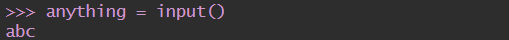
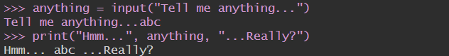
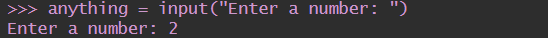
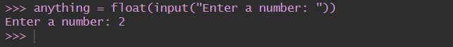
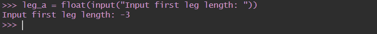
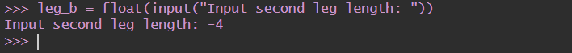
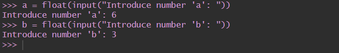

library(reticulate)
use_condaenv("datacamp-learning")
repl_python()exitWelcome to Module two! In the first section, we will learn about the most essential elements of syntax and semantics of the Python language, and use them to build your very first Python program – “Hello, World!”.
It’s time to start writing some real, working Python code. It’ll be very simple for the time being.
As we’re going to show you some fundamental concepts and terms, these snippets of code won’t be all that serious or complex.
Run the code in the editor window. If everything goes okay here, you’ll see the line of text in the console window.
Alternatively, launch IDLE, create a new Python source file, fill it with this code, name the file and save it. Now run it. If everything goes okay, you’ll see the text contained within the quotation marks in the IDLE console window. The code you have run should look familiar. You saw something very similar when we led you through the setting up of the IDLE environment.
Console window (here it’s just a python chunk):
Now we’ll spend some time showing and explaining to you what you’re actually seeing, and why it looks like this.
As you can see, this first program consists of the following parts:
the word print;
an opening parenthesis;
a quotation mark;
a line of text: Hello, World!;
another quotation mark;
a closing parenthesis.
Each of the above plays a very important role in the code.
print() functionLook at the line of code below:
The word print that you can see here is a function name. That doesn’t mean that wherever the word appears it is always a function name. The meaning of the word comes from the context in which the word has been used.
You’ve probably encountered the term function many times before, during math classes. You can probably also list several names of mathematical functions, like sine or log.
Python functions, however, are more flexible, and can contain more content than their mathematical siblings.
A function (in this context) is a separate part of the computer code able to:
cause some effect (e.g., send text to the terminal, create a file, draw an image, play a sound, etc.); this is something completely unheard of in the world of mathematics;
evaluate a value (e.g., the square root of a value or the length of a given text) and return it as the function’s result; this is what makes Python functions the relatives of mathematical concepts.
Moreover, many Python functions can do the above two things together.
Where do the functions come from?
The name of the function should be significant (the name of the print() function is self-evident).
Of course, if you’re going to make use of any already existing function, you have no influence on its name, but when you start writing your own functions, you should consider carefully your choice of names.
As we said before, a function may have:
an effect;
a result.
There’s also a third, very important, function component ‒ the argument(s).
Mathematical functions usually take one argument. For example, \(\sin(x)\) takes an \(x\), which is the measure of an angle.
Python functions, on the other hand, are more versatile. Depending on the individual needs, they may accept any number of arguments ‒ as many as necessary to perform their tasks. Note: When we said any number, that includes zero ‒ some Python functions don’t need any argument.
In spite of the number of needed/provided arguments, Python functions strongly demand the presence of a pair of parentheses ‒ opening and closing ones, respectively.
If you want to deliver one or more arguments to a function, you place them inside the parentheses. If you’re going to use a function which doesn’t take any argument, you still have to have the parentheses.
Note: to distinguish ordinary words from function names, place a pair of empty parentheses after their names, even if the corresponding function wants one or more arguments. This is a standard convention.
The function we’re talking about here is print().
Does the print() function in our example have any arguments?
Of course it does, but what are they?
String as the print() function’s argument
The only argument delivered to the print() function in this example is a string:
As you can see, the string is delimited with quotes ‒ in fact, the quotes make the string ‒ they cut out a part of the code and assign a different meaning to it.
You can imagine that the quotes say something like: the text between us is not code. It isn’t intended to be executed, and you should take it as is.
Almost anything you put inside the quotes will be taken literally, not as code, but as data. Try to play with this particular string ‒ modify it, enter some new content, delete some of the existing content.
There’s more than one way to specify a string inside Python’s code, but for now, though, this one is enough.
So far, you have learned about two important parts of the code: the function and the string. We’ve talked about them in terms of syntax, but now it’s time to discuss them in terms of semantics.
The function name (print in this case) along with the parentheses and argument(s), forms the function invocation.
We’ll discuss this in more depth soon, but let’s just shed a little light on it right now.
What happens when Python encounters an invocation like this one below?
Let’s see:
First, Python checks if the name specified is legal (it browses its internal data in order to find an existing function of the name; if this search fails, Python aborts the code)
second, Python checks if the function’s requirements for the number of arguments allows you to invoke the function in this way (e.g., if a specific function demands exactly two arguments, any invocation delivering only one argument will be considered erroneous, and will abort the code’s execution)
third, Python leaves your code for a moment and jumps into the function you want to invoke; of course, it takes your argument(s) too and passes it/them to the function;
fourth, the function executes its code, causes the desired effect (if any), evaluates the desired result(s) (if any) and finishes its task;
finally, Python returns to your code (to the place just after the invocation) and resumes its execution.
print() function and its effect, arguments, and values returnedThree important questions have to be answered as soon as possible:
1. What effect does the print() function cause?
The effect is very useful and very spectacular. The function:
takes its arguments (it may accept more than one argument and may also accept less than one argument)
converts them into human-readable form if needed (as you may suspect, strings don’t require this action, as the string is already readable)
and sends the resulting data to the output device (usually the console); in other words, anything you put into the print() function will appear on your screen.
No wonder then, that from now on, you’ll utilize print() very intensively to see the results of your operations and evaluations.
2. What arguments does print() expect?
Any. We’ll show you soon that print() is able to operate with virtually all types of data offered by Python. Strings, numbers, characters, logical values, objects ‒ any of these may be successfully passed to print().
3. What value does the print() function return?
None. Its effect is enough.
You have already seen a computer program that contains one function invocation. A function invocation is one of many possible kinds of Python instruction.
Of course, any complex program usually contains many more instructions than one. The question is: how do you couple more than one instruction into the Python code?
Python’s syntax is quite specific in this area. Unlike most programming languages, Python requires that there cannot be more than one instruction in a line.
A line can be empty (i.e., it may contain no instruction at all) but it must not contain two, three or more instructions. This is strictly prohibited.
Note: Python makes one exception to this rule ‒ it allows one instruction to spread across more than one line (which may be helpful when your code contains complex constructions).
Let’s expand the code a bit. You can see it in the editor below. Run it and note what you see in the console.
Your Python console should now look like this:
The itsy bitsy spider climbed up the waterspout.
Down came the rain and washed the spider out.This is a good opportunity to make some observations:
the program invokes the print() function twice, and you can see two separate lines in the console ‒ this means that print() begins its output from a new line each time it starts its execution; you can change this behavior, but you can also use it to your advantage;
each print() invocation contains a different string, as its argument, and the console content reflects it ‒ this means that the instructions in the code are executed in the same order in which they have been placed in the source file; no subsequent instruction is executed until the previous one is completed (there are some exceptions to this rule, but you can ignore them for now.)
We’ve changed the example a bit ‒ we’ve added one empty print() function invocation. We call it empty because we haven’t delivered any arguments to the function.
You can see it in the editor window. Run the code.
What happens?
If everything goes right, you should see something like this:
The itsy bitsy spider climbed up the waterspout.
Down came the rain and washed the spider out.As you can see, the empty print() invocation is not as empty as you may have expected ‒ it does output an empty line, or (this interpretation is also correct) it outputs a newline.
This is not the only way to produce a newline in the output console. We’re now going to show you another way.
We’ve modified the code again. Look at it carefully.
There are two very subtle changes ‒ we’ve inserted a strange pair of characters inside the rhyme. They look like this: \n.
Interestingly, while you can see two characters, Python sees one.
The backslash (\) has a very special meaning when used inside strings ‒ this is called the escape character.
The word escape should be understood specifically ‒ it means that the series of characters in the string escapes for the moment (a very short moment) to introduce a special inclusion.
In other words, the backslash doesn’t mean anything in itself, but is only a kind of announcement, that the next character after the backslash has a different meaning too.
The letter n placed after the backslash comes from the word newline.
Both the backslash and the n form a special symbol named a newline character, which urges the console to start a new output line.
Run the code. Your console should now look like this:
The itsy bitsy spider
climbed up the waterspout.
Down came the rain
and washed the spider out.As you can see, two newlines appear in the nursery rhyme, in the places where the \n have been used.
This convention has two important consequences:
while this one won’t:
So far we have tested the print() function behavior with no arguments, and with one argument. It’s also worth trying to feed the print() function with more than one argument.
Look at the editor window. This is what we’re going to test now:
There is one print() function invocation, but it contains three arguments. All of them are strings.
The arguments are separated by commas. We’ve surrounded them with spaces to make them more visible, but it’s not really necessary, and we won’t be doing it anymore.
In this case, the commas separating the arguments play a completely different role than the comma inside the string. The former is a part of Python’s syntax, while the latter is intended to be shown in the console.
If you look at the code again, you’ll see that there are no spaces inside the strings.
Run the code and see what happens.
The console should now be showing the following text:
The itsy bitsy spider climbed up the waterspout.The spaces, removed from the strings, have appeared again. Can you explain why?
Two conclusions emerge from this example:
a print() function invoked with more than one argument outputs them all on one line;
the print() function puts a space between the outputted arguments on its own initiative.
Now that you know a bit about print() function customs, we’re going to show you how to change them.
You should be able to predict the output without running the code in the editor.
The way in which we are passing the arguments into the print() function is the most common in Python, and is called the positional way. This name comes from the fact that the meaning of the argument is dictated by its position (e.g., the second argument will be outputted after the first, not the other way round).
Check if the output matches your predictions:
My name is Python.
Monty Python.Python offers another mechanism for the passing of arguments, which can be helpful when you want to convince the print() function to change its behavior a bit.
We aren’t going to explain it in depth right now. We plan to do this when we talk about functions. For now, we simply want to show you how it works. Feel free to use it in your own programs.
The mechanism is called keyword arguments. The name stems from the fact that the meaning of these arguments is taken not from its location (position) but from the special word (keyword) used to identify them.
The print() function has two keyword arguments that you can use for your purposes. The first is called end.
In the editor window you can see a very simple example how to use a keyword argument.
In order to use it, it is necessary to know some rules:
a keyword argument consists of three elements: a keyword identifying the argument (end here); an equal sign (=); and a value assigned to that argument;
any keyword arguments have to be put after the last positional argument (this is very important)
In our example, we have made use of the end keyword argument, and set it to a string containing one space.
Run the code to see how it works.
The console should now be showing the following text:
My name is Python. Monty Python. As you can see, the end keyword argument determines the characters the print() function sends to the output once it reaches the end of its positional arguments.
The default behavior reflects the situation where the end keyword argument is implicitly used in the following way: end=“\n”.
And now it’s time to try something more difficult.
If you look carefully, you’ll see that we’ve used the end argument, but the string assigned to it is empty (it contains no characters at all).
What will happen now? Run the program in the editor to find out.
As the end argument has been set to nothing, the print() function outputs nothing too, once its positional arguments have been exhausted.
The console should now be showing the following text:
My name is Monty Python.Note: no newlines have been sent to the output.
The string assigned to the end keyword argument can be of any length. Experiment with it if you want.
We said previously that the print() function separates its outputted arguments with spaces. This behavior can be changed, too.
The keyword argument that can do this is named sep (as in separator).
Look at the code in the editor, and run it.
The print() function now uses a dash, instead of a space, to separate the outputted arguments.
Note: the sep argument’s value may be an empty string, too. Try it for yourself.
Both keyword arguments may be mixed in one invocation, just like here in the editor window.
The example doesn’t make much sense, but it visibly presents the interactions between end and sep.
Can you predict the output?
Run the code and see if it matches your predictions. Otuput:
My_name_is*Monty*Python.*Now that you understand the print() function, you’re ready to consider how to store and process data in Python.
Without print(), you wouldn’t be able to see any results.
print() function is a built-in function. It prints/outputs a specified message to the screen/console window.print("Hello,", "world!"). An “empty” print() function outputs an empty line to the screen."I am a string" (double quotes), or 'I am a string, too' (single quotes).\) is a special character which announces that the next character has a different meaning, e.g., \n (the newline character) starts a new output line.end and sep parameters can be used for formatting the output of the print() function. The sep parameter specifies the separator between the outputted arguments, e.g., print("H", "E", "L", "L", "O", sep="-"), whereas the end parameter specifies what to print at the end of the print statement.Which of the following print() function invocations will cause a SyntaxError?
Answer: Line 5 will raise SyntaxError becasue the ' symbol in the Greg's book. string requires an escape character.
Welcome to section two, where we will talk about Python literals.
Now that you have a little knowledge of some of the powerful features offered by the print() function, it’s time to learn about some new issues, and one important new term ‒ the literal.
A literal is data whose values are determined by the literal itself.
As this is a difficult concept to understand, a good example may be helpful.
Take a look at the following set of digits:
123Can you guess what value it represents? Of course you can ‒ it’s one hundred twenty three.
But what about this:
cDoes it represent any value? Maybe. It can be the symbol of the speed of light, for example. It can also be the constant of integration. Or even the length of a hypotenuse in the sense of a Pythagorean theorem. There are many possibilities.
You cannot choose the right one without some additional knowledge.
And this is the clue: 123 is a literal, and c is not.
You use literals to encode data and to put them into your code. We’re now going to show you some conventions you have to obey when using Python.
Let’s start with a simple experiment ‒ take a look at the snippet in the editor and run it.
If everything goes okay, you’ll now see two identical lines.
What happened? What does it mean?
Through this example, you encounter two different types of literals:
a string, which you already know,
and an integer number, something completely new.
The print() function presents them in exactly the same way ‒ this example is obvious, as their human-readable representation is also the same. Internally, in the computer’s memory, these two values are stored in completely different ways ‒ the string exists as just a string ‒ a series of letters.
The number is converted into machine representation (a set of bits). The print() function is able to show them both in a form readable to humans.
We’re now going to be spending some time discussing numeric literals and their internal life.
You may already know a little about how computers perform calculations on numbers. Perhaps you’ve heard of the binary system, and know that it’s the system computers use for storing numbers, and that those computers can perform any operation upon them.
We won’t explore the intricacies of positional numeric systems here, but we will say that the numbers handled by modern computers are of two types:
integers, that is, those which are devoid of the fractional part;
and floating-point numbers (or simply floats), that contain (or are able to contain) the fractional part.
This definition is not entirely accurate, but quite sufficient for now. The distinction is very important, and the boundary between these two types of numbers is very strict. Both of these kinds of numbers differ significantly in how they’re stored in a computer memory and in the range of acceptable values.
The characteristic of the numeric value which determines its kind, range, and application, is called the type.
If you encode a literal and place it inside Python code, the form of the literal determines the representation (type) Python will use to store it in the memory.
For now, let’s leave the floating-point numbers aside (we’ll come back to them soon) and consider the question of how Python recognizes integers.
The process is almost like how you would write them with a pencil on paper - it’s simply a string of digits that make up the number. But there’s a reservation ‒ you must not interject any characters that are not digits inside the number.
Take, for example, the number eleven million one hundred eleven thousand one hundred eleven. If you took a pencil in your hand right now, you would write the number like this: 11,111,111, or like this: 11.111.111, or even like this: 11 111 111.
It’s clear that this provision makes it easier to read, especially when the number consists of many digits. However, Python doesn’t accept things like these. It’s prohibited. What Python does allow, though, is the use of underscores in numeric literals.*
Therefore, you can write this number either like this: 11111111, or like this: 11_111_111.
Note *Python 3.6 has introduced underscores in numeric literals, allowing for the placement of single underscores between digits and after base specifiers for improved readability. This feature is not available in older versions of Python.
And how do we code negative numbers in Python? As usual ‒ by adding a minus. You can write: -11111111, or -11_111_111.
Positive numbers do not need to be preceded by the plus sign, but it’s permissible, if you wish to do it. The following lines describe the same number: +11111111 and 11111111.
Octal and hexadecimal numbers
There are two additional conventions in Python that are unknown to the world of mathematics. The first allows us to use numbers in an octal representation.
If an integer number is preceded by an 0O or 0o prefix (zero-o), it will be treated as an octal value. This means that
the number must contain digits taken from the [0..7] range only.
0o123 is an octal number with a (decimal) value equal to 83.
The print() function does the conversion automatically. Try this:
The second convention allows us to use hexadecimal numbers. Such numbers should be preceded by the prefix 0x or 0X (zero-x).
0x123 is a hexadecimal number with a (decimal) value equal to 291. The print() function can manage these values too. Try this:
Now it’s time to talk about another type, which is designed to represent and to store the numbers that (as a mathematician would say) have a non-empty decimal fraction.
They are the numbers that have (or may have) a fractional part after the decimal point, and although such a definition is very poor, it’s certainly sufficient for what we wish to discuss.
Whenever we use a term like two and a half or minus zero point four, we think of numbers which the computer considers floating-point numbers:
2.5
-0.4 Note: two and a half looks normal when you write it in a program, although if your native language prefers to use a comma instead of a point in the number, you should ensure that your number doesn’t contain any commas at all.
Python will not accept that, or (in very rare but possible cases) may misunderstand your intentions, as the comma itself has its own reserved meaning in Python.
If you want to use just a value of two and a half, you should write it as shown above. Note once again: there is a point between 2 and 5, not a comma.
As you can probably imagine, the value of zero point four could be written in Python as:
0.4But don’t forget this simple rule ‒ you can omit zero when it is the only digit in front of or after the decimal point.
In essence, you can write the value 0.4 as:
.4For example: the value of 4.0 could be written as:
4.This will change neither its type nor its value.
The decimal point is essential for recognizing floating-point numbers in Python.
Look at these two numbers:
4
4.0 You may think that they are exactly the same, but Python sees them in a completely different way.
4 is an integer number, whereas 4.0 is a floating-point number. The point is what makes a float.
On the other hand, it’s not only points that make a float. You can also use the letter e.
When you want to use any numbers that are very large or very small, you can use scientific notation.
Take, for example, the speed of light, expressed in meters per second. Written directly it would look like this: 300000000.
To avoid writing out so many zeros, physics textbooks use an abbreviated form, which you have probably already seen: \(3 \times 10^8\).
It reads: three times ten to the power of eight.
In Python, the same effect is achieved in a slightly different way ‒ take a look:
The letter E (you can also use the lower-case letter e ‒ it comes from the word exponent) is a concise record of the phrase times ten to the power of.
Note:
the exponent (the value after the E) has to be an integer;
the base (the value in front of the E) may be either an integer or a float.
Let’s see how this convention is used to record numbers that are very
small (in the sense of their absolute value, which is close to zero).
A physical constant called Planck’s constant (and denoted as h), according to the textbooks, has the value of: 6.62607 x 10-34.
If you would like to use it in a program, you should write it this way:
Note: the fact that you’ve chosen one of the possible forms of coding float values doesn’t mean that Python will present it the same way.
Python may sometimes choose different notation than you.
For example, let’s say you’ve decided to use the following float literal:
When you run this literal through Python:
this is the result:
1e-22Python always chooses the more economical form of the number’s presentation, and you should take this into consideration when creating literals.
Strings are used when you need to process text (like names of all kinds, addresses, novels, etc.), not numbers.
You already know a bit about them, e.g., that strings need quotes the way floats need points.
This is a very typical string: "I am a string."
However, there is a catch. The catch is how to encode a quote inside a string which is already delimited by quotes.
Let’s assume that we want to print a very simple message saying:
I like "Monty Python"How do we do it without generating an error? There are two possible solutions.
The first is based on the concept we already know of the escape character, which you should remember is played by the backslash. The backslash can escape quotes too. A quote preceded by a backslash changes its meaning ‒ it’s not a delimiter, but just a quote. This will work as intended:
Note: there are two escaped quotes inside the string ‒ can you see them both?
The second solution may be a bit surprising. Python can use an apostrophe instead of a quote. Either of these characters may delimit strings, but you must be consistent.
If you open a string with a quote, you have to close it with a quote.
If you start a string with an apostrophe, you have to end it with an apostrophe.
This example will work too:
Note: you don’t need to do any escaping here.
Coding strings
Now, the next question is: how do you embed an apostrophe into a string placed between apostrophes?
You should already know the answer, or to be precise, two possible answers.
Try to print out a string containing the following message:
I'm Monty Python.As you can see, the backslash is a very powerful tool ‒ it can escape not only quotes, but also apostrophes.
We’ve shown it already, but we want to emphasize this phenomenon once more: a string can be empty ‒ it may contain no characters at all.
An empty string still remains a string:
To conclude with Python’s literals, there are two additional ones.
They’re not as obvious as any of the previous ones, as they’re used to represent a very abstract value ‒ truthfulness.
Each time you ask Python if one number is greater than another, the question results in the creation of some specific data ‒ a Boolean value.
The name comes from George Boole (1815-1864), the author of the fundamental work, The Laws of Thought, which contains the definition of Boolean algebra ‒ a part of algebra which makes use of only two distinct values: True and False, denoted as 1 and 0.
A programmer writes a program, and the program asks questions. Python executes the program, and provides the answers. The program must be able to react according to the received answers.
Fortunately, computers know only two kinds of answers:
Yes, this is true;
No, this is false.
You’ll never get a response like: I don’t know or Probably yes, but I don’t know for sure.
Python, then, is a binary reptile.
These two Boolean values have strict denotations in Python:
You cannot change anything ‒ you have to take these symbols as they are, including case-sensitivity.
What will be the output of the following snippet of code?
Can you explain the result?
Write a one-line piece of code, using the print() function, as well as the newline and escape characters, to match the expected result outputted on three lines.
Expected output:
"I'm"
""learning""
"""Python""" Literals are notations for representing some fixed values in code. Python has various types of literals - for example, a literal can be a number (numeric literals, e.g., 123), or a string (string literals, e.g., “I am a literal.”).
The binary system is a system of numbers that employs 2 as the base. Therefore, a binary number is made up of 0s and 1s only, e.g., 1010 is 10 in decimal.
Octal and hexadecimal numeration systems, similarly, employ 8 and 16 as their bases respectively. The hexadecimal system uses the decimal numbers and six extra letters.
Integers (or simply ints) are one of the numerical types supported by Python. They are numbers written without a fractional component, e.g., 256, or -1 (negative integers).
Floating-point numbers (or simply floats) are another one of the numerical types supported by Python. They are numbers that contain (or are able to contain) a fractional component, e.g., 1.27.
To encode an apostrophe or a quote inside a string, you can either use the escape character, e.g., 'I\'m happy.', or open and close the string using an opposite set of symbols to the ones you wish to encode, e.g., "I'm happy." to encode an apostrophe, and 'He said "Python", not "typhoon"' to encode a (double) quote.
Boolean values are the two constant objects True and False used to represent truth values (in numeric contexts 1 is True, while 0 is False.
Extra
There is one more, special literal that is used in Python: the None literal. This literal is a NoneType object, and it is used to represent the absence of a value. We’ll tell you more about it soon.
Question 1: What types of literals are the following two examples?
"Hello ", "007" Answer: They’re both strings/string literals.
Question 2: What types of literals are the following four examples?
"1.5", 2.0, 528, False Answer: The first is a string, the second is a numerical literal (a float), the third is a numerical literal (an integer), and the fourth is a boolean literal.
Question 3: What is the decimal value of the following binary number?
1011It’s 11, because \(2^0 + 2^1 + 2^3 = 11\)
Welcome to section three, where we will talk about Python operators.
Now, we’re going to show you a completely new side of the print() function. You already know that the function is able to show you the values of the literals passed to it by arguments.
In fact, it can do something more. Take a look at the snippet an run it:
You should see the number four. Feel free to experiment with other operators.
Without taking this too seriously, you’ve just discovered that Python can be used as a calculator. Not a very handy one, and definitely not a pocket one, but a calculator nonetheless.
Taking it more seriously, we are now entering the province of operators and expressions.
An operator is a symbol of the programming language, which is able to operate on the values.
For example, just as in arithmetic, the + (plus) sign is the operator which is able to add two numbers, giving the result of the addition.
Not all Python operators are as obvious as the plus sign, though, so let’s go through some of the operators available in Python, and we’ll explain which rules govern their use, and how to interpret the operations they perform.
We’ll begin with the operators which are associated with the most widely recognizable arithmetic operations:
+
-
*
/
//
%
** The order of their appearance is not accidental. We’ll talk more about it once we’ve gone through them all.
Remember: Data and operators when connected together form expressions. The simplest expression is a literal itself.
Look at the following example in the editor:
Note: we’ve surrounded the double asterisks with spaces in our examples. It’s not compulsory, but it improves the readability of the code.
The examples show a very important feature of virtually all Python numerical operators.
Run the code and look carefully at the results it produces. Can you see any regularity here?
Remember: It’s possible to formulate the following rules based on this result:
when both ** arguments are integers, the result is an integer, too;
when at least one ** argument is a float, the result is a float, too.
This is an important distinction to remember.
An * (asterisk) sign is a multiplication operator.
Run the code below and check if our integer vs. float rule is still working
A / (slash) sign is a division operator.
The value in front of the slash is a dividend, the value behind the slash, a divisor.
Run the code below and analyze the results.
You should see that there is an exception to the rule.
The result produced by the division operator is always a float, regardless of whether or not the result seems to be a float at first glance: 1 / 2, or if it looks like a pure integer: 2 / 1.
Is this a problem? Yes, it is. It happens sometimes that you really need a division that provides an integer value, not a float.
Fortunately, Python can help you with that.
A // (double slash) sign is an integer division operator. It differs from the standard / operator in two details:
its result lacks the fractional part ‒ it’s absent (for integers), or is always equal to zero (for floats); this means that the results are always rounded;
it conforms to the integer vs. float rule.
Run the example below and see the results:
As you can see, integer by integer division gives an integer result. All other cases produce floats.
Let’s do some more advanced tests.
Look at the following snippet:
Imagine that we used / instead of // ‒ could you predict the results?
Yes, it would be 1.5 in both cases. That’s clear.
But what results should we expect with // division?
Run the code and see for yourself.
What we get is two ones ‒ one integer and one float.
The result of integer division is always rounded to the nearest integer value that is less than the real (not rounded) result.
This is very important: rounding always goes to the lesser integer.
Look at the code below and run it:
Note: some of the values are negative. This will obviously affect the result. But how?
The result is two negative twos. The real (not rounded) result is -1.5 in both cases. However, the results are the subjects of rounding. The rounding goes toward the lesser integer value, and the lesser integer value is -2, hence: -2 and -2.0.
Note: Integer division can also be called floor division. You will definitely come across this term in the future.
The next operator is quite a peculiar one, because it has no equivalent among traditional arithmetic operators.
Its graphical representation in Python is the % (percent) sign, which may look a bit confusing.
Try to think of it as a slash (division operator) accompanied by two funny little circles.
The result of the operator is a remainder left after the integer division.
In other words, it’s the value left over after dividing one value by another to produce an integer quotient.
Note: the operator is sometimes called modulo in other programming languages.
Take a look at the snippet ‒ try to predict its result and then run it:
As you can see, the result is two. This is why:
14 // 4 gives 3 → this is the integer quotient;
3 * 4 gives 12 → as a result of quotient and divisor multiplication;
14 - 12 gives 2 → this is the remainder.
This example is somewhat more complicated:
What is the result?
3.0 – not 3 but 3.0. The rule still works:
12 // 4.5 gives 2.0,
2.0 * 4.5 gives 9.0,
12 - 9.0 gives 3.0.
As you probably know, division by zero doesn’t work.
Do not try to:
perform a division by zero;
perform an integer division by zero;
find a remainder of a division by zero.
The addition operator is the + (plus) sign, which is fully in line with mathematical standards.
Again, take a look at the snippet of the program below:
The result should be nothing surprising.
The subtraction operator is obviously the - (minus) sign, although you should note that this operator also has another meaning ‒ it can change the sign of a number.
This is a great opportunity to present a very important distinction between unary and binary operators.
In subtracting applications, the minus operator expects two arguments: the left (a minuend in arithmetical terms) and right (a subtrahend).
For this reason, the subtraction operator is considered to be one of the binary operators, just like the addition, multiplication and division operators.
But the minus operator may be used in a different (unary) way ‒ take a look at the last line of the snippet below:
By the way: there is also a unary + operator. You can use it like this:
The operator preserves the sign of its only argument – the right one.
Although such a construction is syntactically correct, using it doesn’t make much sense, and it would be hard to find a good rationale for doing so.
So far, we’ve treated each operator as if it had no connection with the others. Obviously, such an ideal and simple situation is a rarity in real programming.
Also, you will very often find more than one operator in one expression, and then things are no longer so simple.
Consider the following expression:
You probably remember from school that multiplications precede additions.
You surely remember that you should first multiply 3 by 5 and, keeping the 15 in your memory, then add it to 2, thus getting the result of 17.
The phenomenon that causes some operators to act before others is known as the hierarchy of priorities.
Python precisely defines the priorities of all operators, and assumes that operators of a higher priority perform their operations before the operators of a lower priority.
So, if you know that * has a higher priority than +, the computation of the final result should be obvious.
The binding of the operator determines the order of computations performed by some operators with equal priority, put side by side in one expression.
Most of Python’s operators have left-sided binding, which means that the calculation of the expression is conducted from left to right.
This simple example will show you how it works. Take a look:
There are two possible ways of evaluating this expression:
from left to right: first 9 % 6 gives 3, and then 3 % 2 gives 1;
from right to left: first 6 % 2 gives 0, and then 9 % 0 causes a fatal error.
Run the example and see what you get.
The result should be 1. This operator has left-sided binding. But there’s one interesting exception.
Repeat the experiment, but now with exponentiation.
Use this snippet of code:
The two possible results are:
2 ** 2 → 4; 4 ** 3 → 64
2 ** 3 → 8; 2 ** 8 → 256
Run the code. What do you see?
The result clearly shows that the exponentiation operator uses right-sided binding.
This has an interesting effect. If the exponentiation operator uses right-sided binding, can you guess the output of the following snippet?
Since you’re new to Python operators, we don’t want to present the complete list of operator priorities right now.
Instead, we’ll show you a truncated form, and we’ll expand it consistently as we introduce new operators.
Look at the table below:
| Priority | Operator | |
|---|---|---|
| 1 | ** |
|
| 2 | +, - (note: unary operators located next to the right of the power operator bind more strongly) |
unary |
| 3 | *, /, //, % |
|
| 4 | +, - |
binary |
Note: we’ve enumerated the operators in order from the highest (1) to the lowest (4) priorities.
Try to work through the following expression:
Both operators (* and %) have the same priority, so the result can be guessed only when you know the binding direction. What do you think? What is the result?
Of course, you’re always allowed to use parentheses, which can change the natural order of a calculation.
In accordance with the arithmetic rules, subexpressions in parentheses are always calculated first.
You can use as many parentheses as you need, and they’re often used to improve the readability of an expression, even if they don’t change the order of the operations.
An example of an expression with multiple parentheses is here:
Key takeaways
1 + 2.* operator multiplies two values: x * y.+ (addition), - (subtraction), * (multiplication), / (classic division ‒ always returns a float), % (modulus ‒ divides left operand by right operand and returns the remainder of the operation, e.g., 5 % 2 = 1), ** (exponentiation ‒ left operand raised to the power of right operand, e.g., 2 ** 3 = 2 * 2 * 2 = 8), // (floor/integer division ‒ returns a number resulting from division, but rounded down to the nearest whole number, e.g., 3 // 2.0 = 1.0)-1, or +3.4 + 5, or 12 % 5.the ** operator (exponentiation) has the highest priority;
then the unary + and - (note: a unary operator to the right of the exponentiation operator binds more strongly, for example 4 ** -1 equals 0.25)
then: *, /, and %,
and finally, the lowest priority: binary + and -.
15 - 1 * (5 * (1 + 2)) = 0.2 ** 2 ** 3 = 256.Question 1: What is the expected output of the following snippet?
Question 2: What is the expected output of the following snippet?
Question 3: What is the expected output of the following snippet?
Welcome to section four! This part of the course focuses on variables – we will learn what they are, how to use them, and what the rules are that govern them.
It seems fairly obvious that Python should allow you to encode literals carrying number and text values.
You already know that you can do some arithmetic operations with these numbers: add, subtract, etc. You’ll be doing that many times.
But it’s quite a normal question to ask how to store the results of these operations, in order to use them in other operations, and so on.
How do you save the intermediate results, and use them again to produce subsequent ones?
Python will help you with that. It offers special “boxes” (or “containers” as we may call them) for that purpose, and these boxes are called variables ‒ the name itself suggests that the content of these containers can be varied in (almost) any way.
What does every Python variable have?
a name;
a value (the content of the container)
Let’s start with the issues related to a variable’s name.
Variables do not appear in a program automatically. As a developer, you must decide how many and which variables to use in your programs.
You must also name them.
If you want to give a name to a variable, you must follow some strict rules:
the name of the variable must be composed of upper-case or lower-case letters, digits, and the character _ (underscore)
the name of the variable must begin with a letter;
the underscore character is a letter;
upper- and lower-case letters are treated as different (a little differently than in the real world – Alice and ALICE are the same first names, but in Python they are two different variable names, and consequently, two different variables);
the name of the variable must not be any of Python’s reserved words (the keywords – we’ll explain more about this soon).
Note that the same restrictions apply to function names.
Python does not impose restrictions on the length of variable names, but that doesn’t mean that a long variable name is always better than a short one.
Here are some correct, but not always convenient variable names:
MyVariable
i
l
t34
Exchange_Rate
counter
days_to_christmas
TheNameIsTooLongAndHardlyReadable
_
These variable names are also correct:
Adiós_Señora
sûr_la_mer
Einbahnstraße
переменная.
Python lets you use not only Latin letters but also characters specific to languages that use other alphabets.
And now for some incorrect names:
10t (does not begin with a letter)
!important (does not begin with a letter)
exchange rate (contains a space).
The PEP 8 – Style Guide for Python Code recommends the following naming convention for variables and functions in Python:
variable names should be lowercase, with words separated by underscores to improve readability (e.g., var, my_variable)
function names follow the same convention as variable names (e.g., fun, my_function)
it’s also possible to use mixed case (e.g., myVariable), but only in contexts where that’s already the prevailing style, to retain backward compatibility with the adopted convention.
Take a look at the list of words that play a very special role in every Python program.
['False', 'None', 'True', 'and', 'as', 'assert', 'break', 'class', 'continue', 'def', 'del', 'elif', 'else', 'except', 'finally', 'for', 'from', 'global', 'if', 'import', 'in', 'is', 'lambda', 'nonlocal', 'not', 'or', 'pass', 'raise', 'return', 'try', 'while', 'with', 'yield']
They are called keywords or (more precisely) reserved keywords. They are reserved because you mustn’t use them as names: neither for your variables, nor functions, nor any other named entities you want to create.
The meaning of the reserved word is predefined, and mustn’t be changed in any way.
Fortunately, due to the fact that Python is case-sensitive, you can modify any of these words by changing the case of any letter, thus creating a new word, which is not reserved anymore.
For example ‒ you can’t name your variable like this:
You mustn’t have a variable named in such a way ‒ it is prohibited. But you can do this instead:
These words might be a mystery to you now, but you’ll soon learn the meaning of them.
What can you put inside a variable?
Anything.
You can use a variable to store any value of any of the already presented kinds, and many more of the ones we haven’t shown you yet.
The value of a variable is what you have put into it. It can vary as often as you need or want. It can be an integer one moment, and a float a moment later, eventually becoming a string.
Let’s talk now about two important things ‒ how variables are created, and how to put values inside them (or rather ‒ how to give or pass values to them).
A variable comes into existence as a result of assigning a value to it. Unlike in other languages, you don’t need to declare it in any special way.
If you assign any value to a nonexistent variable, the variable will be automatically created. You don’t need to do anything else.
The creation (in other words, its syntax) is extremely simple: just use the name of the desired variable, then the equal sign (=) and the value you want to put into the variable.
Take a look at the snippet in the editor:
It consists of two simple instructions:
The first of them creates a variable named var, and assigns a literal with an integer value equal to 1.
The second prints the value of the newly created variable to the console.
As you can see, print() has yet another side to it ‒ it can handle variables too.
You’re allowed to use as many variable declarations as you need to achieve your goal, like this:
1 1000.0 John Doe
1However, you’re not allowed to use a variable which doesn’t exist (in other words, a variable that was not assigned a value).
This example will cause an error:
Do you know why? We’ve tried to use a variable named Var, which doesn’t have any value (note: var and Var are different entities, and have nothing in common as far as Python’s concerned).
You can use the print() function and combine text and variables using the + operator to output strings and variables. For example:
How do you assign a new value to a variable that already exists? In the same way. You just need to use the equal sign.
The equal sign is in fact an assignment operator. Although this may sound strange, the operator has a simple syntax and unambiguous interpretation.
It assigns the value of its right argument to the left, while the right argument may be an arbitrarily complex expression involving literals, operators and already defined variables.
Look at the code below:
The code sends two lines to the console.
The first line of the snippet creates a new variable named var and assigns 1 to it.
The statement reads: assign a value of 1 to a variable named var.
We can say it shorter: assign 1 to var.
Some prefer to read such a statement as: var becomes 1.
The third line assigns the same variable with the new value taken from the variable itself, summed with 1. Seeing a record like that, a mathematician would probably protest ‒ no value may be equal to itself plus one. This is a contradiction. But Python treats the sign = not as equal to, but as assign a value.
So how do you read such a record in the program?
Take the current value of the variable var, add 1 to it and store the result in the variable var.
In effect, the value of variable var has been incremented by one, which has nothing to do with comparing the variable with any value.
Do you know what the output of the following snippet will be?
500 ‒ why? Well, first, the var variable is created and assigned a value of 100. Then, the same variable is assigned a new value: the result of adding 200 to 300, which is 500.
Now you should be able to construct a short program solving simple mathematical problems such as the Pythagorean theorem:
The square of the hypotenuse is equal to the sum of the squares of the other two sides.
The following code evaluates the length of the hypotenuse (i.e., the longest side of a right-angled triangle, the one opposite of the right angle) using the Pythagorean theorem:
Note: we need to make use of the ** operator to evaluate the square root as:
\[ \sqrt{x} = x^{1/2} \]
and
\[ c = \sqrt{a^2 + b^2} \]
Scenario
Here is a short story:
Once upon a time in Appleland, John had three apples, Mary had five apples, and Adam had six apples. They were all very happy and lived for a long time. End of story.
Your task is to:
create the variables: john, mary, and adam;
assign values to the variables. The values must be equal to the numbers of fruit possessed by John, Mary, and Adam respectively;
having stored the numbers in the variables, print the variables on one line, and separate each of them with a comma;
now create a new variable named total_apples equal to the addition of the three previous variables.
print the value stored in total_apples to the console;
experiment with your code: create new variables, assign different values to them, and perform various arithmetic operations on them (e.g., +, -, *, /, //, etc.). Try to print a string and an integer together on one line, e.g., "Total number of apples:" and total_apples.
It’s time for the next set of operators that make a developer’s life easier. Very often, we want to use one and the same variable both to the right and left sides of the = operator.
For example, if we need to calculate a series of successive values of powers of 2, we may use a piece like this:
You may use an expression like this if you can’t fall asleep and you’re trying to deal with it using some good, old-fashioned methods:
Python offers you a shortened way of writing operations like these, which can be coded as follows:
Let’s try to present a general description for these operations. If op is a two-argument operator (this is a very important condition) and the operator is used in the following context…:
variable = variable op expression…then it can be simplified and shown as follows:
variable op= expressionTake a look at the examples below. Make sure you understand them all.
| Expression | Shortcut operator |
|---|---|
i = i + 2 * j |
i += 2 * j |
var = var / 2 |
var /= 2 |
rem = rem % 10 |
rem %= 10 |
j = j - (i + var + rem) |
j -= (i + var + rem) |
x = x ** 2 |
x **= 2 |
Scenario
Miles and kilometers are units of length or distance.
Bearing in mind that 1 mile is equal to approximately 1.61 kilometers, complete the program in the editor so that it converts:
miles to kilometers;
kilometers to miles.
Do not change anything in the existing code. Write your code in the places indicated by ###. Test your program with the data we’ve provided in the source code.
Pay particular attention to what is going on inside the print() function. Analyze how we provide multiple arguments to the function, and how we output the expected data.
Note that some of the arguments inside the print() function are strings (e.g., "miles is", whereas some other are variables (e.g., miles).
There’s one more interesting thing happening there. Can you see another function inside the print() function? It’s the round() function. Its job is to round the outputted result to the number of decimal places specified in the parentheses, and return a float (inside the round() function you can find the variable name, a comma, and the number of decimal places we’re aiming for). We’re going to talk about functions very soon, so don’t worry that everything may not be fully clear yet. We just want to spark your curiosity.
Expected output:
7.38 miles is 11.88 kilometers
12.25 kilometers is 7.61 miles 7.38 miles is 11.88 kilometers
12.25 kilometers is 7.61 milesScenario
Take a look at the code in the editor: it reads a float value, puts it into a variable named x, and prints the value of a variable named y.
Your task is to complete the code in order to evaluate the following expression:
\[ 3x^3 - 2x^2 + 3^x - 1 \]
The result should be assigned to y.
Remember that classical algebraic notation likes to omit the multiplication operator ‒ you need to use it explicitly. Note how we change data type to make sure that x is of type float.
Keep your code clean and readable, and test it using the data we’ve provided, each time assigning it to the x variable (by hardcoding it).
| Sample input | Sample output |
|---|---|
x = 0 |
y = -1.0 |
x = 1 |
y = 3.0 |
x = -1 |
y = -9.0 |
A variable is a named location reserved to store values in the memory. A variable is created or initialized automatically when you assign a value to it for the first time. (2.1.4.1)
Each variable must have a unique name ‒ an identifier. A legal identifier name must be a non-empty sequence of characters, must begin with the underscore(_), or a letter, and it cannot be a Python keyword. The first character may be followed by underscores, letters, and digits. Identifiers in Python are case-sensitive.
Python is a dynamically-typed language, which means you don’t need to declare variables in it. (2.1.4.3) To assign values to variables, you can use a simple assignment operator in the form of the equal (=) sign, i.e., var = 1.
You can also use compound assignment operators (shortcut operators) to modify values assigned to variables, for example: var += 1, or var /= 5 * 2.
You can assign new values to already existing variables using the assignment operator or one of the compound operators, for example:
You can combine text and variables using the + operator, and use the print() function to output strings and variables, for example:
Question 1: What is the output of the following code?
Question 2: Which of the following variable names are illegal in Python? (Select three answers)
my_varm101averylongVariablenamem101m 101DeldelAnswer: 101, m 101, and del.
Question 3: What is the output of the following snippet?
Question 4: What is the output of the following snippet?
The expression on the right-hand side of the /= shortcut, i.e. 2 * b, is evaluated first and then a is divided by the result. The incorrect order is a / 2 first and then that multiplied by b, like in the following code chunk:
This is correct order in which the expression is evaluated:
In this section you will learn how to talk to a computer: you will familiarize yourself with the input() function, perform type conversions, and learn how to use string operators.
input() functionWe’re now going to introduce you to a completely new function, which seems to be a mirror reflection of the good old print() function.
Why? Well, print() sends data to the console.
The new function gets data from it.
print() has no usable result. The meaning of the new function is to return a very usable result.
The function is named input(). The name of the function says everything.
The input() function is able to read data entered by the user and to return the same data to the running program.
The program can manipulate the data, making the code truly interactive.
Virtually all programs read and process data. A program which doesn’t get a user’s input is a deaf program.
Take a look at our example:
It shows a very simple case of using the input() function.
Note:
The program prompts the user to input some data from the console (most likely using a keyboard, although it is also possible to input data using voice or image);
the input() function is invoked without arguments (this is the simplest way of using the function); the function will switch the console to input mode; you’ll see a blinking cursor, and you’ll be able to input some keystrokes, finishing off by hitting the Enter key; all the inputted data will be sent to your program through the function’s result;
note: you need to assign the result to a variable; this is crucial ‒ missing out this step will cause the entered data to be lost;
then we use the print() function to output the data we get, with some additional remarks.
Run the code and let the function show you what it can do for you.

abc is the inputinput() function with an argumentThe input() function can do something else: it can prompt the user without any help from print().
We’ve modified our example a bit, look at the code:

abcNote:
the input() function is invoked with one argument ‒ it’s a string containing a message;
the message will be displayed on the console before the user is given an opportunity to enter anything;
input() will then do its job.
This variant of the input() invocation simplifies the code and makes it clearer.
input() functionWe’ve said it already, but it must be unambiguously stated once again: the result of the input() function is a string.
A string containing all the characters the user enters from the keyboard. It is not an integer or a float.
This means that you mustn’t use it as an argument of any arithmetic operation, e.g., you can’t use this data to square it, divide it by anything, or divide anything by it.

TypeError: unsupported operand type(s) for ** or pow(): 'str' and 'float'The sentence explains everything ‒ you tried to apply the ** operator to 'str' (string) accompanied with 'float'.
This is prohibited.
This should be obvious - can you predict the value of "to be or not to be" raised to the power of 2?
We can’t. Python can’t, either.
Have we fallen into a deadlock? Is there a solution to this issue? Of course there is.
Python offers two simple functions to specify a type of data and solve this problem ‒ here they are: int() and float().
Their names are self-commenting:
the int() function takes one argument (e.g., a string: int(string)) and tries to convert it into an integer; if it fails, the whole program will fail too (there is a workaround for this situation, but we’ll show you this a little later);
the float() function takes one argument (e.g., a string: float(string)) and tries to convert it into a float (the rest is the same).
This is very simple and very effective. Moreover, you can invoke any of the functions by passing the input() results directly to them. There’s no need to use any variable as an intermediate storage.
We’ve implemented the idea in the editor ‒ take a look at the code.
Can you imagine how the string entered by the user flows from input() into print()?
Try to run the modified code. Don’t forget to enter a valid number.

input() and type castingHaving a team consisting of the trio input()-int()-float() opens up lots of new possibilities.
You’ll eventually be able to write complete programs, accepting data in the form of numbers, processing them and displaying the results.
Of course, these programs will be very primitive and not very usable, as they cannot make decisions, and consequently are not able to react differently to different situations.
This is not really a problem, though; we’ll show you how to overcome it soon.
Our next example refers to the earlier program to find the length of a hypotenuse. Let’s run it and make it able to read the lengths of the legs from the console.
Check out the editor window ‒ this is what it looks like now:
The program asks the user for the lengths of both legs, evaluates the hypotenuse and prints the result. Run it and try to input some negative values.


The program, unfortunately, doesn’t react to this obvious error. Let’s ignore this weakness for now. We’ll come back to it soon.
Note that in the program that you can see in the editor, the hypo variable is used for only one purpose ‒ to save the calculated value between the execution of the adjoining line of code.
As the print() function accepts an expression as its argument, you can remove the variable from the code.
Just like this:
It’s time to return to these two arithmetic operators: + and *.
We want to show you that they have a second function. They are able to do something more than just add and multiply.
We’ve seen them in action where their arguments are numbers (floats or integers, it doesn’t matter).
Now we’re going to show you that they can handle strings, too, albeit in a very specific way.
The + (plus) sign, when applied to two strings, becomes a concatenation operator:
It simply concatenates (glues) two strings into one. Of course, like its arithmetic sibling, it can be used more than once in one expression, and in such a context it behaves according to left-sided binding.
In contrast to its arithmetic sibling, the concatenation operator is not commutative, i.e., "ab" + "ba" is not the same as "ba" + "ab".
Don’t forget ‒ if you want the + sign to be a concatenator, not an adder, you must ensure that both its arguments are strings.
You cannot mix types here.
This simple program shows the + sign in its second use:
Your name is Erick Canul.Note: using + to concatenate strings lets you construct the output in a more precise way than with a pure print() function, even if enriched with the end= and sep= keyword arguments.
Replication
The * (asterisk) sign, when applied to a string and number (or a number and string, as it remains commutative in this position) becomes a replication operator:
It replicates the string the same number of times specified by the number.
For example:
"James" * 3 gives "JamesJamesJames"
3 * "an" gives "ananan"
5 * "2" (or "2" * 5) gives "22222" (not 10!)
A number less than or equal to zero produces an empty string.
This simple program “draws” a rectangle, making use of an old operator (+) in a new role:
+----------+
| |
| |
| |
| |
| |
+----------+Note the way in which we’ve used the parentheses in ("|" + " " * 10 + "|\n") * 5.
str()
You already know how to use the int() and float() functions to convert a string into a number.
This type of conversion is not a one-way street. You can also convert a number into a string, which is way easier and safer ‒ this kind of operation is always possible.
A function capable of doing that is called str():
To be honest, it can do much more than just transform numbers into strings, but that can wait for later.
The right-angle triangle again
Here is our “right-angle triangle” program again:
Hypotenuse length is 5.0We’ve modified it a bit to show you how the str() function works. Thanks to this, we can pass the whole result to the print() function as one string, forgetting about the commas.
You’ve made some serious strides on your way to Python programming.
You already know the basic data types, and a set of fundamental operators. You know how to organize the output and how to get data from the user. These are very strong foundations for Module 3. But before we move on to the next module, let’s do a few labs, and recap all that you’ve learned in this section.
Scenario
Your task is to complete the code in order to evaluate the results of four basic arithmetic operations.
The results have to be printed to the console.
You may not be able to protect the code from a user who wants to divide by zero. That’s okay, don’t worry about it for now.
Test your code ‒ does it produce the results you expect?
We won’t show you any test data ‒ that would be too simple.
Solution:

Scenario
Your task is to complete the code in order to evaluate the following expression:
The result should be assigned to y. Be careful ‒ watch the operators and keep their priorities in mind. Don’t hesitate to use as many parentheses as you need.
You can use additional variables to shorten the expression (but it’s not necessary). Test your code carefully.
Test data
| Sample input | Expected output |
|---|---|
1 |
y = 0.6000000000000001 |
10 |
y = 0.09901951266867294 |
100 |
y = 0.009999000199950014 |
-5 |
y = -0.19258202567760344 |
Scenario
Your task is to prepare a simple code able to evaluate the end time of a period of time, given as a number of minutes (it could be arbitrarily large). The start time is given as a pair of hours (0..23) and minutes (0..59). The result has to be printed to the console.
For example, if an event starts at 12:17 and lasts 59 minutes, it will end at 13:16.
Don’t worry about any imperfections in your code ‒ it’s okay if it accepts an invalid time ‒ the most important thing is that the code produces valid results for valid input data.
Test your code carefully. Hint: using the % operator may be the key to success.
Test Data
| Sample input | Expected output |
|---|---|
|
13:16 |
|
10:40 |
|
1:0 |
End time: 13:16End time: 10:40The print() function sends data to the console, while the input() function gets data from the console.
The input() function comes with an optional parameter: the prompt string. It allows you to write a message before the user input, e.g.:
When the input() function is called, the program’s flow is stopped, the prompt symbol keeps blinking (it prompts the user to take action when the console is switched to input mode) until the user has entered an input and/or pressed the Enter key.
The result of the input() function is a string. You can add strings to each other using the concatenation (+) operator. Check out this code:
You can also multiply (* ‒ replication) strings, e.g.:
5 Comments
Welcome to section five where we will share with you a few comments on comments. You will learn here why it is important to document your code, and why you should leave comments. You will also learn how to do it, and when comments are considered good practice.
5.1 Comments – why, when, and how?
You may want to put in a few words addressed not to Python but to humans, usually to explain to other readers of the code how the tricks used in the code work, or the meanings of the variables, and eventually, in order to keep stored information on who the author is and when the program was written.
A remark inserted into the program, which is omitted at runtime, is called a comment.
How do you leave this kind of comment in the source code? It has to be done in a way that won’t force Python to interpret it as part of the code.
Whenever Python encounters a comment in your program, the comment is completely transparent to it ‒ from Python’s point of view, this is only one space (regardless of how long the real comment is).
In Python, a comment is a piece of text that begins with a
#(hash) sign and extends to the end of the line.If you want a comment that spans several lines, you have to put a hash in front of them all. Just like here:
Good, responsible developers describe each important piece of code, for example, by explaining the role of the variables. Although it must be stated that the best way of commenting variables is to name them in an unambiguous manner.
For example, if a particular variable is designed to store an area of some unique square, the name
square_areawill obviously be better thanaunt_jane.We say that the first name is self-commenting.
5.2 Marking fragments of code
Comments may be useful in another respect ‒ you can use them to mark a piece of code that currently isn’t needed for whatever reason. Look at the example below, if you uncomment the 4th line, this will affect the output of the code:
This is often done during the testing of a program, in order to isolate the place where an error might be hidden.
If you’d like to quickly comment or uncomment multiple lines of code, select the line(s) you wish to modify and use the following keyboard shortcut: CTRL + / (Windows) or CMD + / (Mac OS). It’s a very useful trick, isn’t it?
5.3 Lab: Comments
Scenario
The code in the editor contains comments. Try to improve it: add or remove comments where you find it appropriate (yes, sometimes removing a comment can make the code more readable), and change variable names where you think this will improve code comprehension.
Comments are very important. They are used not only to make your programs easier to understand, but also to disable those pieces of code that are currently not needed (e.g., when you need to test some parts of your code only, and ignore others). Good programmers describe each important piece of code, and give self-commenting names to variables, as sometimes it is simply much better to leave information in the code.
It’s good to use readable variable names, and sometimes it’s better to divide your code into named pieces (e.g., functions). In some situations, it’s a good idea to write the steps of computations in a clearer way.
One more thing: it may happen that a comment contains a wrong or incorrect piece of information ‒ you should never do that on purpose!
5.4 Section summary
Comments can be used to leave additional information in code. They are omitted at runtime. The information left in the source code is addressed to human readers. In Python, a comment is a piece of text that begins with
#. The comment extends to the end of the line.If you want to place a comment that spans several lines, you need to place
#in front of them all. Moreover, you can use a comment to mark a piece of code that is not needed at the moment (see the last line of the snippet below), for example:Whenever possible and justified, you should give self-commenting names to variables, e.g., if you’re using two variables to store the length and width of something, the variable names
lengthandwidthmay be a better choice thanmyvar1andmyvar2.It’s important to use comments to make programs easier to understand, and to use readable and meaningful variable names in code. However, it’s equally important not to use variable names that are confusing, or leave comments that contain wrong or incorrect information!
Comments can be important when you are reading your own code after some time (trust us, developers do forget what their own code does), and when others are reading your code (they can help them understand what your programs do and how they do it more quickly).